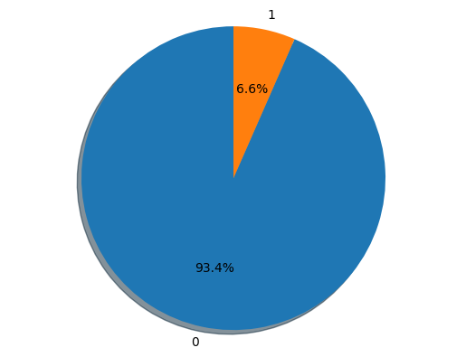

Classification
This notebook presents example usage of package for solving classification problem on seismic-bumps dataset. You can download dataset here.
This tutorial will cover topics such as:
- training model
- changing model hyperparameters
- hyperparameters tuning
- calculating metrics for model
- getting RuleKit inbuilt
Summary of the dataset
[1]:
from scipy.io import arff
import pandas as pd
df_full = pd.DataFrame(arff.loadarff('./seismic-bumps.arff')[0])
df_full['class'] = df_full['class'].astype(int)
df_full.describe()
[1]:
| genergy | gimpuls | goenergy | goimpuls | nbumps | nbumps2 | nbumps3 | nbumps4 | nbumps5 | nbumps6 | nbumps7 | nbumps89 | senergy | maxenergy | class | |
|---|---|---|---|---|---|---|---|---|---|---|---|---|---|---|---|
| count | 2.584000e+03 | 2584.000000 | 2584.000000 | 2584.000000 | 2584.000000 | 2584.000000 | 2584.000000 | 2584.000000 | 2584.000000 | 2584.0 | 2584.0 | 2584.0 | 2584.000000 | 2584.000000 | 2584.000000 |
| mean | 9.024252e+04 | 538.579334 | 12.375774 | 4.508901 | 0.859520 | 0.393576 | 0.392802 | 0.067724 | 0.004644 | 0.0 | 0.0 | 0.0 | 4975.270898 | 4278.850619 | 0.065789 |
| std | 2.292005e+05 | 562.652536 | 80.319051 | 63.166556 | 1.364616 | 0.783772 | 0.769710 | 0.279059 | 0.068001 | 0.0 | 0.0 | 0.0 | 20450.833222 | 19357.454882 | 0.247962 |
| min | 1.000000e+02 | 2.000000 | -96.000000 | -96.000000 | 0.000000 | 0.000000 | 0.000000 | 0.000000 | 0.000000 | 0.0 | 0.0 | 0.0 | 0.000000 | 0.000000 | 0.000000 |
| 25% | 1.166000e+04 | 190.000000 | -37.000000 | -36.000000 | 0.000000 | 0.000000 | 0.000000 | 0.000000 | 0.000000 | 0.0 | 0.0 | 0.0 | 0.000000 | 0.000000 | 0.000000 |
| 50% | 2.548500e+04 | 379.000000 | -6.000000 | -6.000000 | 0.000000 | 0.000000 | 0.000000 | 0.000000 | 0.000000 | 0.0 | 0.0 | 0.0 | 0.000000 | 0.000000 | 0.000000 |
| 75% | 5.283250e+04 | 669.000000 | 38.000000 | 30.250000 | 1.000000 | 1.000000 | 1.000000 | 0.000000 | 0.000000 | 0.0 | 0.0 | 0.0 | 2600.000000 | 2000.000000 | 0.000000 |
| max | 2.595650e+06 | 4518.000000 | 1245.000000 | 838.000000 | 9.000000 | 8.000000 | 7.000000 | 3.000000 | 1.000000 | 0.0 | 0.0 | 0.0 | 402000.000000 | 400000.000000 | 1.000000 |
Decision class distribution
[2]:
import matplotlib.pyplot as plt
groups = df_full['class'].value_counts()
sizes = [groups[0], groups[1]]
labels = list(map(lambda e: str(e), groups.index))
fig1, ax1 = plt.subplots()
ax1.pie(sizes, labels=labels, autopct='%1.1f%%', shadow=True, startangle=90)
ax1.axis('equal')
plt.show()

Import RuleKit
[2]:
from rulekit.classification import RuleClassifier
from rulekit.params import Measures
Helper function for calculating metrics
[5]:
import sklearn.tree as scikit
from sklearn.datasets import load_iris
import math
from sklearn.preprocessing import MultiLabelBinarizer
from sklearn import metrics
import pandas as pd
import numpy as np
x = df_full.drop(['class'], axis=1)
y = df_full['class']
def get_prediction_metrics(measure: str, y_pred, y_true, classification_metrics: dict) -> tuple[pd.DataFrame, np.ndarray]:
confusion_matrix = metrics.confusion_matrix(y_true, y_pred)
tn, fp, fn, tp = confusion_matrix.ravel()
sensitivity = tp / (tp + fn)
specificity = tn / (tn + fp)
npv = tn / (tn + fn)
ppv = tp / (tp + fp)
dictionary = {
'Measure': measure,
'Accuracy': metrics.accuracy_score(y_true, y_pred),
'MAE': metrics.mean_absolute_error(y_true, y_pred),
'Kappa': metrics.cohen_kappa_score(y_true, y_pred),
'Balanced accuracy': metrics.balanced_accuracy_score(y_true, y_pred),
'Logistic loss': metrics.log_loss(y_true, y_pred),
'Precision': metrics.log_loss(y_true, y_pred),
'Sensitivity': sensitivity,
'Specificity': specificity,
'NPV': npv,
'PPV': ppv,
'psep': ppv + npv - 1,
'Fall-out': fp / (fp + tn),
"Youden's J statistic": sensitivity + specificity - 1,
'Lift': (tp / (tp + fp)) / ((tp + fn) / (tp + tn + fp + fn)),
'F-measure': 2 * tp / (2 * tp + fp + fn),
'Fowlkes-Mallows index': metrics.fowlkes_mallows_score(y_true, y_pred),
'False positive': fp,
'False negative': fn,
'True positive': tp,
'True negative': tn,
'Rules per example': classification_metrics['rules_per_example'],
'Voting conflicts': classification_metrics['voting_conflicts'],
'Negative voting conflicts': classification_metrics['negative_voting_conflicts'],
'Geometric mean': math.sqrt(specificity * sensitivity),
'Geometric mean': math.sqrt(specificity * sensitivity),
}
return pd.DataFrame.from_records([dictionary], index='Measure'), confusion_matrix
def get_ruleset_stats(measure: str, model) -> pd.DataFrame:
return pd.DataFrame.from_records([{'Measure': measure, **model.stats.__dict__}], index='Measure')
Rule induction on full dataset
[5]:
from IPython.display import display
# C2
clf = RuleClassifier(
induction_measure=Measures.C2,
pruning_measure=Measures.C2,
voting_measure=Measures.C2,
)
clf.fit(x, y)
c2_ruleset = clf.model
prediction, classification_metrics = clf.predict(x, return_metrics=True)
prediction_metric, c2_confusion_matrix = get_prediction_metrics('C2', prediction, y, classification_metrics)
model_stats = get_ruleset_stats('C2', clf.model)
# Correlation
clf = RuleClassifier(
induction_measure=Measures.Correlation,
pruning_measure=Measures.Correlation,
voting_measure=Measures.Correlation,
)
clf.fit(x, y)
corr_ruleset = clf.model
prediction, classification_metrics = clf.predict(x, return_metrics=True)
tmp, corr_confusion_matrix = get_prediction_metrics('Correlation', prediction, y, classification_metrics)
prediction_metric = pd.concat([prediction_metric, tmp])
model_stats = pd.concat([model_stats, get_ruleset_stats('Correlation', clf.model)])
# RSS
clf = RuleClassifier(
induction_measure=Measures.RSS,
pruning_measure=Measures.RSS,
voting_measure=Measures.RSS,
)
clf.fit(x, y)
rss_ruleset = clf.model
prediction, classification_metrics = clf.predict(x, return_metrics=True)
tmp, rss_confusion_matrix = get_prediction_metrics('RSS', prediction, y, classification_metrics)
prediction_metric = pd.concat([prediction_metric, tmp])
model_stats = pd.concat([model_stats, get_ruleset_stats('RSS', clf.model)])
display(model_stats)
display(prediction_metric)
print('Confusion matrix - C2')
display(pd.DataFrame(c2_confusion_matrix))
print('Confusion matrix - Correlation')
display(pd.DataFrame(corr_confusion_matrix))
print('Confusion matrix - RSS')
display(pd.DataFrame(rss_confusion_matrix))
| time_total_s | time_growing_s | time_pruning_s | rules_count | conditions_per_rule | induced_conditions_per_rule | avg_rule_coverage | avg_rule_precision | avg_rule_quality | pvalue | FDR_pvalue | FWER_pvalue | fraction_significant | fraction_FDR_significant | fraction_FWER_significant | |
|---|---|---|---|---|---|---|---|---|---|---|---|---|---|---|---|
| Measure | |||||||||||||||
| C2 | 3.784658 | 3.268134 | 0.394257 | 178 | 5.005618 | 14.382022 | 0.141539 | 0.916631 | 0.479177 | 0.058208 | 0.063738 | 0.884413 | 0.769663 | 0.752809 | 0.561798 |
| Correlation | 3.130663 | 2.592273 | 0.492708 | 58 | 6.000000 | 54.293103 | 0.401149 | 0.692328 | 0.189074 | 0.028175 | 0.029145 | 0.080958 | 0.896552 | 0.896552 | 0.879310 |
| RSS | 3.186367 | 2.761221 | 0.402097 | 60 | 4.216667 | 46.200000 | 0.599639 | 0.851306 | 0.333375 | 0.006559 | 0.006685 | 0.013799 | 0.966667 | 0.950000 | 0.916667 |
| Accuracy | MAE | Kappa | Balanced accuracy | Logistic loss | Precision | Sensitivity | Specificity | NPV | PPV | ... | F-measure | Fowlkes-Mallows index | False positive | False negative | True positive | True negative | Rules per example | Voting conflicts | Negative voting conflicts | Geometric mean | |
|---|---|---|---|---|---|---|---|---|---|---|---|---|---|---|---|---|---|---|---|---|---|
| Measure | |||||||||||||||||||||
| C2 | 0.968266 | 0.031734 | 0.682882 | 0.777962 | 1.143800 | 1.143800 | 0.558824 | 0.997100 | 0.969782 | 0.931373 | ... | 0.698529 | 0.966199 | 7 | 75 | 95 | 2407 | 25.193885 | 837.0 | 57.0 | 0.746460 |
| Correlation | 0.916409 | 0.083591 | 0.323665 | 0.662717 | 3.012937 | 3.012937 | 0.370588 | 0.954847 | 0.955638 | 0.366279 | ... | 0.368421 | 0.912555 | 109 | 107 | 63 | 2305 | 23.266641 | 1846.0 | 160.0 | 0.594857 |
| RSS | 0.923762 | 0.076238 | 0.225132 | 0.590099 | 2.747910 | 2.747910 | 0.205882 | 0.974316 | 0.945718 | 0.360825 | ... | 0.262172 | 0.922288 | 62 | 135 | 35 | 2352 | 35.978328 | 1843.0 | 82.0 | 0.447878 |
3 rows × 24 columns
Confusion matrix - C2
| 0 | 1 | |
|---|---|---|
| 0 | 2407 | 7 |
| 1 | 75 | 95 |
Confusion matrix - Correlation
| 0 | 1 | |
|---|---|---|
| 0 | 2305 | 109 |
| 1 | 107 | 63 |
Confusion matrix - RSS
| 0 | 1 | |
|---|---|---|
| 0 | 2352 | 62 |
| 1 | 135 | 35 |
C2 Measure generated rules
[6]:
for rule in c2_ruleset.rules:
print(rule)
IF gimpuls = (-inf, 32.50) THEN class = {0}
IF gimpuls = (-inf, 54.50) AND senergy = (-inf, 3700) THEN class = {0}
IF gimpuls = (-inf, 54.50) AND genergy = <1865, inf) THEN class = {0}
IF goenergy = <-84.50, inf) AND goimpuls = (-inf, -0.50) AND genergy = (-inf, 13675) AND nbumps = (-inf, 0.50) THEN class = {0}
IF goenergy = <-84.50, inf) AND genergy = (-inf, 17640) AND nbumps = (-inf, 0.50) THEN class = {0}
IF genergy = <1635, 13675) AND goimpuls = (-inf, -0.50) AND nbumps = (-inf, 0.50) THEN class = {0}
IF goenergy = <-84.50, inf) AND gimpuls = (-inf, 772.50) AND genergy = (-inf, 17640) AND senergy = (-inf, 650) THEN class = {0}
IF goenergy = <-84.50, inf) AND maxenergy = (-inf, 950) AND gimpuls = (-inf, 772.50) AND genergy = (-inf, 17640) THEN class = {0}
IF goenergy = <-84.50, inf) AND goimpuls = (-inf, -5.50) AND genergy = (-inf, 13675) AND senergy = (-inf, 2200) AND nbumps2 = (-inf, 0.50) THEN class = {0}
IF goenergy = <-84.50, inf) AND gimpuls = (-inf, 772.50) AND genergy = (-inf, 17640) AND senergy = (-inf, 2200) THEN class = {0}
IF goenergy = <-84.50, inf) AND maxenergy = (-inf, 3500) AND genergy = (-inf, 17640) AND nbumps2 = (-inf, 0.50) THEN class = {0}
IF goenergy = <-84.50, inf) AND maxenergy = (-inf, 3500) AND gimpuls = (-inf, 772.50) AND genergy = (-inf, 17640) THEN class = {0}
IF goenergy = <-84.50, inf) AND gimpuls = (-inf, 772.50) AND genergy = (-inf, 17640) AND nbumps3 = (-inf, 0.50) AND senergy = (-inf, 25000) THEN class = {0}
IF goenergy = <-84.50, inf) AND gimpuls = (-inf, 772.50) AND genergy = (-inf, 17640) AND nbumps3 = (-inf, 0.50) THEN class = {0}
IF gimpuls = (-inf, 772.50) AND genergy = <1865, 17640) AND senergy = (-inf, 4400) AND nbumps = (-inf, 1.50) THEN class = {0}
IF gimpuls = (-inf, 217) AND genergy = <1865, inf) AND goimpuls = (-inf, -5.50) AND nbumps4 = (-inf, 0.50) AND nbumps2 = (-inf, 0.50) THEN class = {0}
IF goenergy = (-inf, 68) AND genergy = <1865, 17640) AND senergy = (-inf, 25000) AND nbumps = (-inf, 1.50) THEN class = {0}
IF ghazard = {c} THEN class = {0}
IF goenergy = <-84.50, inf) AND gimpuls = (-inf, 536) AND genergy = (-inf, 18585) AND nbumps = (-inf, 0.50) THEN class = {0}
IF goenergy = <-84.50, inf) AND genergy = (-inf, 18585) AND nbumps = (-inf, 0.50) THEN class = {0}
IF maxenergy = (-inf, 950) AND gimpuls = (-inf, 536) AND genergy = (-inf, 18585) THEN class = {0}
IF gimpuls = (-inf, 536) AND genergy = <1865, 18585) AND nbumps3 = (-inf, 1.50) AND senergy = (-inf, 27100) THEN class = {0}
IF goenergy = <297.50, inf) THEN class = {0}
IF senergy = <115450, inf) THEN class = {0}
IF genergy = <1789250, inf) THEN class = {0}
IF gimpuls = (-inf, 786) AND genergy = <1865, 18810) AND nbumps3 = (-inf, 1.50) AND senergy = (-inf, 27100) THEN class = {0}
IF goenergy = <-84.50, inf) AND genergy = (-inf, 51290) AND goimpuls = (-inf, -0.50) AND shift = {N} AND nbumps = (-inf, 0.50) THEN class = {0}
IF goenergy = <-84.50, inf) AND gimpuls = (-inf, 184.50) AND goimpuls = (-inf, 27.50) AND nbumps = (-inf, 0.50) THEN class = {0}
IF goenergy = <-84.50, inf) AND genergy = (-inf, 51290) AND shift = {N} AND nbumps = (-inf, 0.50) THEN class = {0}
IF goenergy = <-73.50, inf) AND goimpuls = (-inf, -0.50) AND shift = {N} AND nbumps = (-inf, 0.50) THEN class = {0}
IF goenergy = <-73.50, inf) AND goimpuls = (-inf, 96.50) AND shift = {N} AND nbumps = (-inf, 0.50) THEN class = {0}
IF goenergy = <-55.50, inf) AND goimpuls = (-inf, 96.50) AND shift = {N} AND senergy = (-inf, 2150) THEN class = {0}
IF goimpuls = <-70.50, 96.50) AND genergy = <4640, inf) AND shift = {N} AND nbumps2 = (-inf, 0.50) THEN class = {0}
IF gimpuls = <135, inf) AND goimpuls = (-inf, 230.50) AND genergy = <9110, inf) AND shift = {N} AND senergy = (-inf, 2150) THEN class = {0}
IF genergy = <9110, inf) AND shift = {N} AND senergy = <2400, 9500) AND nbumps3 = (-inf, 1.50) THEN class = {0}
IF goenergy = <-84.50, inf) AND gimpuls = (-inf, 395) AND genergy = (-inf, 19310) AND goimpuls = (-inf, -0.50) AND nbumps = (-inf, 0.50) THEN class = {0}
IF goenergy = <-84.50, inf) AND gimpuls = (-inf, 786) AND genergy = (-inf, 19310) AND senergy = (-inf, 650) THEN class = {0}
IF goenergy = <-54.50, inf) AND genergy = <10915, 19310) AND goimpuls = <-50.50, 230.50) AND nbumps2 = (-inf, 1.50) AND nbumps = <0.50, inf) THEN class = {0}
IF goenergy = <-84.50, inf) AND gimpuls = (-inf, 786) AND genergy = (-inf, 19510) AND senergy = (-inf, 650) THEN class = {0}
IF goenergy = <-84.50, inf) AND gimpuls = (-inf, 392.50) AND genergy = (-inf, 20525) AND goimpuls = (-inf, -0.50) AND nbumps = (-inf, 0.50) THEN class = {0}
IF goenergy = <-84.50, 118) AND genergy = (-inf, 20525) AND senergy = (-inf, 550) THEN class = {0}
IF goenergy = <-84.50, inf) AND gimpuls = (-inf, 319.50) AND goimpuls = (-inf, -0.50) AND seismoacoustic = {a} AND nbumps = (-inf, 0.50) THEN class = {0}
IF goenergy = <-84.50, inf) AND gimpuls = (-inf, 319.50) AND goimpuls = (-inf, -0.50) AND nbumps = (-inf, 0.50) THEN class = {0}
IF goenergy = <-84.50, inf) AND gimpuls = (-inf, 362.50) AND goimpuls = (-inf, -0.50) AND nbumps = (-inf, 0.50) THEN class = {0}
IF goenergy = <-84.50, inf) AND gimpuls = (-inf, 319.50) AND goimpuls = (-inf, -0.50) AND senergy = (-inf, 550) THEN class = {0}
IF goenergy = <-84.50, inf) AND gimpuls = (-inf, 362.50) AND goimpuls = (-inf, -0.50) AND senergy = (-inf, 550) THEN class = {0}
IF goenergy = <-84.50, 118) AND gimpuls = (-inf, 362.50) AND goimpuls = (-inf, 96.50) AND nbumps = (-inf, 0.50) THEN class = {0}
IF goenergy = <-84.50, 118) AND gimpuls = (-inf, 362.50) AND goimpuls = (-inf, 96.50) AND senergy = (-inf, 550) THEN class = {0}
IF goenergy = <-84.50, 118) AND gimpuls = (-inf, 380.50) AND goimpuls = (-inf, 96.50) AND nbumps = (-inf, 0.50) THEN class = {0}
IF goenergy = <-84.50, 120.50) AND gimpuls = (-inf, 395.50) AND maxenergy = (-inf, 350) AND goimpuls = (-inf, 96.50) AND senergy = (-inf, 550) THEN class = {0}
IF goenergy = <-84.50, 120.50) AND gimpuls = (-inf, 449.50) AND maxenergy = (-inf, 350) AND genergy = (-inf, 32875) THEN class = {0}
IF goenergy = <-84.50, 120.50) AND gimpuls = (-inf, 449.50) AND maxenergy = (-inf, 350) AND goimpuls = (-inf, 96.50) AND senergy = (-inf, 550) THEN class = {0}
IF goenergy = <-84.50, inf) AND gimpuls = (-inf, 449.50) AND goimpuls = (-inf, 96.50) AND senergy = (-inf, 550) THEN class = {0}
IF goenergy = <-84.50, inf) AND gimpuls = (-inf, 537.50) AND genergy = (-inf, 25125) AND goimpuls = (-inf, 27.50) AND nbumps = (-inf, 0.50) THEN class = {0}
IF goenergy = <-84.50, 114.50) AND gimpuls = (-inf, 537.50) AND maxenergy = (-inf, 350) AND genergy = (-inf, 31790) THEN class = {0}
IF goenergy = <-84.50, 114.50) AND genergy = (-inf, 31790) AND senergy = (-inf, 550) THEN class = {0}
IF goenergy = <116.50, inf) AND gimpuls = (-inf, 788.50) AND genergy = <20930, 31790) THEN class = {0}
IF goenergy = <-84.50, 114.50) AND genergy = (-inf, 32770) AND senergy = (-inf, 550) THEN class = {0}
IF goenergy = <-84.50, 87.50) AND gimpuls = (-inf, 1342.50) AND goimpuls = (-inf, 96) AND senergy = (-inf, 550) THEN class = {0}
IF goenergy = <-84.50, 87.50) AND gimpuls = (-inf, 1732) AND goimpuls = (-inf, 96) AND senergy = (-inf, 550) THEN class = {0}
IF goenergy = <-84.50, 87.50) AND gimpuls = (-inf, 2168) AND goimpuls = (-inf, 96) AND senergy = (-inf, 550) THEN class = {0}
IF goenergy = <-84.50, 87.50) AND genergy = (-inf, 1674705) AND goimpuls = (-inf, 96) AND senergy = (-inf, 550) THEN class = {0}
IF ghazard = {a} AND goenergy = <57, inf) AND gimpuls = (-inf, 514.50) AND goimpuls = <-1.50, 96.50) AND senergy = (-inf, 550) THEN class = {0}
IF goenergy = (-inf, 104.50) AND gimpuls = <523, 1342.50) AND goimpuls = <17.50, inf) AND genergy = <46870, inf) AND nbumps = (-inf, 1.50) THEN class = {0}
IF goenergy = <29.50, 104.50) AND gimpuls = <522, 2168) AND senergy = (-inf, 250) THEN class = {0}
IF goenergy = <-19, inf) AND goimpuls = <4.50, 312) AND genergy = <4455, 34260) AND nbumps = (-inf, 0.50) THEN class = {0}
IF goenergy = <8.50, inf) AND gimpuls = <523, 1342.50) AND goimpuls = (-inf, 96.50) AND senergy = (-inf, 250) THEN class = {0}
IF genergy = <36470, 42165) AND goimpuls = <5.50, inf) AND senergy = (-inf, 550) THEN class = {0}
IF goenergy = <119.50, inf) AND gimpuls = <516, 1210) AND goimpuls = (-inf, 118.50) AND nbumps = (-inf, 1.50) THEN class = {0}
IF gimpuls = <144.50, 1210) AND genergy = <42430, inf) AND goimpuls = <59.50, inf) AND senergy = (-inf, 250) THEN class = {0}
IF gimpuls = <813.50, 1427.50) AND goimpuls = <104.50, inf) AND senergy = (-inf, 350) THEN class = {0}
IF gimpuls = (-inf, 319) AND genergy = <1865, 19670) AND goimpuls = (-inf, -6.50) AND senergy = (-inf, 9600) THEN class = {0}
IF goenergy = <-84.50, inf) AND gimpuls = (-inf, 362.50) AND goimpuls = (-inf, -0.50) AND senergy = (-inf, 650) THEN class = {0}
IF goenergy = <-44.50, inf) AND gimpuls = <324.50, inf) AND genergy = (-inf, 32770) AND goimpuls = (-inf, 105.50) AND nbumps = <0.50, 1.50) THEN class = {0}
IF goenergy = <-73.50, 14.50) AND gimpuls = (-inf, 1342.50) AND genergy = <36280, inf) AND senergy = (-inf, 650) THEN class = {0}
IF goimpuls = <-6.50, inf) AND genergy = <49585, inf) AND senergy = (-inf, 650) AND nbumps = <0.50, inf) THEN class = {0}
IF goenergy = <-54.50, inf) AND genergy = (-inf, 64725) AND senergy = <650, 750) THEN class = {0}
IF goenergy = <-33.50, inf) AND maxenergy = (-inf, 950) AND gimpuls = (-inf, 537.50) AND genergy = (-inf, 25125) AND goimpuls = <-41.50, -0.50) THEN class = {0}
IF goenergy = <-84.50, 114.50) AND gimpuls = (-inf, 587.50) AND genergy = (-inf, 27275) AND nbumps3 = (-inf, 0.50) AND senergy = (-inf, 25250) THEN class = {0}
IF goenergy = (-inf, 114.50) AND genergy = <1865, 28515) AND senergy = (-inf, 7500) AND nbumps = (-inf, 1.50) THEN class = {0}
IF goenergy = (-inf, -20.50) AND gimpuls = (-inf, 537.50) AND genergy = <20610, 28515) AND nbumps2 = (-inf, 0.50) THEN class = {0}
IF genergy = (-inf, 28515) AND nbumps = <5.50, inf) THEN class = {0}
IF maxenergy = (-inf, 3500) AND genergy = <20270, 28515) AND goimpuls = (-inf, -8.50) AND nbumps2 = <0.50, 1.50) THEN class = {0}
IF genergy = <3260, 28515) AND senergy = <8500, inf) AND nbumps = (-inf, 2.50) THEN class = {0}
IF goenergy = <-36.50, inf) AND genergy = (-inf, 28515) AND senergy = <5050, inf) THEN class = {0}
IF ghazard = {a} AND goenergy = <-53.50, 40.50) AND genergy = <20560, 29105) AND nbumps2 = <0.50, inf) THEN class = {0}
IF goenergy = (-inf, 14.50) AND maxenergy = (-inf, 550) AND gimpuls = (-inf, 1252.50) AND nbumps = (-inf, 2.50) THEN class = {0}
IF goenergy = <-40.50, 28.50) AND gimpuls = (-inf, 2168) AND genergy = <40210, inf) AND senergy = (-inf, 850) AND seismic = {a} THEN class = {0}
IF goenergy = (-inf, 104.50) AND gimpuls = (-inf, 362.50) AND genergy = <1865, inf) AND goimpuls = (-inf, 66.50) AND senergy = (-inf, 7500) AND nbumps2 = (-inf, 0.50) THEN class = {0}
IF goenergy = (-inf, 88.50) AND gimpuls = (-inf, 1210) AND goimpuls = (-inf, 96) AND genergy = <1865, inf) AND senergy = (-inf, 7500) AND nbumps = (-inf, 1.50) THEN class = {0}
IF goenergy = <17.50, inf) AND gimpuls = (-inf, 1210) AND goimpuls = (-inf, 66.50) AND nbumps2 = (-inf, 0.50) AND nbumps = <0.50, inf) THEN class = {0}
IF gimpuls = (-inf, 1210) AND genergy = <7815, inf) AND senergy = <1500, 7500) AND nbumps = (-inf, 1.50) THEN class = {0}
IF goenergy = (-inf, 88.50) AND gimpuls = (-inf, 1252.50) AND goimpuls = (-inf, 96) AND genergy = <1865, inf) AND senergy = (-inf, 7500) AND nbumps = (-inf, 1.50) THEN class = {0}
IF gimpuls = (-inf, 1342.50) AND goimpuls = <-54.50, inf) AND genergy = <7870, inf) AND senergy = <1500, inf) AND nbumps = (-inf, 1.50) THEN class = {0}
IF goenergy = <-40.50, 31.50) AND gimpuls = (-inf, 1485) AND genergy = <44960, inf) AND senergy = (-inf, 5500) AND nbumps = (-inf, 1.50) THEN class = {0}
IF gimpuls = <1441.50, inf) AND genergy = (-inf, 117575) THEN class = {0}
IF goenergy = (-inf, 87.50) AND gimpuls = (-inf, 1752) AND goimpuls = (-inf, 96) AND nbumps3 = (-inf, 0.50) AND nbumps = (-inf, 1.50) THEN class = {0}
IF goimpuls = <-40.50, inf) AND genergy = <422215, inf) AND seismoacoustic = {a} AND senergy = <2500, inf) AND nbumps2 = (-inf, 0.50) THEN class = {0}
IF genergy = <29945, 31245) THEN class = {0}
IF goenergy = <-33.50, inf) AND genergy = <29155, 31615) AND goimpuls = (-inf, 105.50) AND nbumps3 = (-inf, 1.50) THEN class = {0}
IF genergy = <31805, 32680) THEN class = {0}
IF goenergy = (-inf, 158.50) AND maxenergy = (-inf, 650) AND gimpuls = (-inf, 1210) AND goimpuls = (-inf, 96.50) THEN class = {0}
IF genergy = <32925, 34315) THEN class = {0}
IF maxenergy = (-inf, 750) AND genergy = <35480, 45240) AND nbumps = <0.50, inf) THEN class = {0}
IF ghazard = {a} AND goenergy = <-27.50, inf) AND maxenergy = (-inf, 750) AND gimpuls = (-inf, 2056) AND genergy = (-inf, 715465) AND senergy = <850, inf) THEN class = {0}
IF goenergy = <-84.50, inf) AND gimpuls = (-inf, 305.50) AND goimpuls = (-inf, 17.50) AND senergy = (-inf, 2300) THEN class = {0}
IF goenergy = <-84.50, inf) AND gimpuls = (-inf, 305.50) AND maxenergy = (-inf, 3500) AND goimpuls = (-inf, -5.50) THEN class = {0}
IF gimpuls = (-inf, 305.50) AND genergy = <29195, inf) AND goimpuls = (-inf, 96) AND senergy = (-inf, 9850) THEN class = {0}
IF senergy = <71000, inf) AND nbumps2 = (-inf, 0.50) THEN class = {0}
IF goenergy = (-inf, 88.50) AND gimpuls = (-inf, 1141.50) AND maxenergy = (-inf, 7500) AND genergy = <1865, inf) AND goimpuls = (-inf, 96) AND nbumps3 = (-inf, 2.50) AND nbumps2 = (-inf, 0.50) THEN class = {0}
IF goenergy = <-72.50, inf) AND gimpuls = (-inf, 1372) AND genergy = <55365, inf) AND senergy = <1500, inf) AND nbumps2 = (-inf, 0.50) THEN class = {0}
IF goenergy = (-inf, 87.50) AND genergy = (-inf, 1733075) AND nbumps3 = (-inf, 1.50) AND nbumps2 = (-inf, 0.50) THEN class = {0}
IF goenergy = <-32.50, inf) AND gimpuls = (-inf, 2681) AND genergy = <173815, 1026530) AND nbumps3 = (-inf, 2.50) AND nbumps2 = (-inf, 0.50) THEN class = {0}
IF ghazard = {a} AND goenergy = <0.50, 87.50) AND maxenergy = <550, 850) THEN class = {0}
IF ghazard = {a} AND goenergy = <-29.50, inf) AND gimpuls = <259.50, inf) AND maxenergy = <550, inf) AND genergy = (-inf, 39305) AND goimpuls = <-39.50, inf) AND senergy = (-inf, 4400) AND nbumps3 = (-inf, 2.50) THEN class = {0}
IF goenergy = <-18.50, 105.50) AND genergy = <9110, 39695) AND goimpuls = <-41.50, inf) AND nbumps3 = (-inf, 2.50) THEN class = {0}
IF gimpuls = (-inf, 361.50) AND maxenergy = (-inf, 3500) AND senergy = <3250, inf) THEN class = {0}
IF goenergy = <-37.50, inf) AND gimpuls = (-inf, 361.50) AND maxenergy = (-inf, 35000) AND genergy = <38315, inf) AND senergy = <950, inf) THEN class = {0}
IF goenergy = <-18.50, inf) AND gimpuls = <334.50, 804.50) AND maxenergy = <550, inf) AND genergy = (-inf, 44750) AND senergy = (-inf, 25150) AND nbumps2 = <0.50, 3.50) THEN class = {0}
IF senergy = <1250, 1550) AND nbumps2 = (-inf, 1.50) THEN class = {0}
IF genergy = <44780, 45255) THEN class = {0}
IF goenergy = (-inf, 158.50) AND senergy = <1150, 1650) AND nbumps2 = (-inf, 2.50) THEN class = {0}
IF genergy = <46690, 48545) THEN class = {0}
IF goenergy = (-inf, 68) AND gimpuls = (-inf, 769.50) AND genergy = <43280, 49095) AND nbumps3 = (-inf, 3.50) THEN class = {0}
IF goenergy = (-inf, 95.50) AND gimpuls = (-inf, 514.50) AND goimpuls = <-7, 96.50) AND genergy = <40245, inf) AND nbumps3 = (-inf, 2.50) THEN class = {0}
IF goenergy = <-73.50, inf) AND gimpuls = (-inf, 514.50) AND maxenergy = <550, 8500) AND genergy = <49265, 108000) THEN class = {0}
IF goenergy = <-53.50, inf) AND gimpuls = (-inf, 1836) AND nbumps3 = (-inf, 0.50) AND nbumps4 = <0.50, inf) AND nbumps2 = (-inf, 1.50) THEN class = {0}
IF maxenergy = (-inf, 1500) AND gimpuls = <673.50, 1210) AND senergy = <1700, inf) THEN class = {0}
IF goenergy = <-84.50, inf) AND gimpuls = (-inf, 1245.50) AND genergy = <49585, 58435) AND goimpuls = (-inf, 96.50) AND nbumps3 = (-inf, 1.50) AND nbumps2 = (-inf, 2.50) THEN class = {0}
IF ghazard = {a} AND goenergy = (-inf, 68.50) AND gimpuls = <526, 606) AND genergy = <17700, inf) AND senergy = (-inf, 9550) AND nbumps2 = (-inf, 1.50) THEN class = {0}
IF goenergy = <-43.50, 87.50) AND senergy = (-inf, 3150) AND nbumps3 = (-inf, 1.50) AND nbumps2 = (-inf, 1.50) AND nbumps = <1.50, inf) THEN class = {0}
IF goenergy = (-inf, 120.50) AND gimpuls = (-inf, 1029.50) AND genergy = <58515, 61125) AND nbumps2 = (-inf, 2.50) THEN class = {0}
IF gimpuls = <393.50, 725.50) AND genergy = <81935, inf) AND nbumps3 = (-inf, 2.50) THEN class = {0}
IF goenergy = <11.50, 68.50) AND maxenergy = (-inf, 2500) AND gimpuls = <556, inf) AND genergy = (-inf, 1482055) AND nbumps2 = <0.50, inf) THEN class = {0}
IF goenergy = (-inf, 28.50) AND gimpuls = <354, 791.50) AND genergy = <81505, 366505) AND nbumps3 = (-inf, 2.50) THEN class = {0}
IF goenergy = <-31.50, 104.50) AND gimpuls = <325, 2068.50) AND goimpuls = (-inf, 50.50) AND senergy = (-inf, 5750) AND nbumps3 = (-inf, 1.50) AND nbumps2 = <0.50, 1.50) THEN class = {0}
IF goenergy = <-9.50, inf) AND gimpuls = <938.50, 2902.50) AND maxenergy = (-inf, 3500) AND genergy = <80845, 508210) AND nbumps = <0.50, inf) THEN class = {0}
IF senergy = <5050, 5750) THEN class = {0}
IF gimpuls = <887.50, 977) AND goimpuls = (-inf, -6.50) AND senergy = (-inf, 85450) THEN class = {0}
IF ghazard = {a} AND goenergy = <-38.50, inf) AND gimpuls = <813.50, 1151) AND maxenergy = <3500, inf) AND goimpuls = (-inf, 89.50) AND nbumps2 = (-inf, 2.50) THEN class = {0}
IF goenergy = <-27.50, inf) AND genergy = <123990, 544010) AND senergy = (-inf, 17850) AND nbumps = <3.50, inf) THEN class = {0}
IF goenergy = (-inf, 68.50) AND maxenergy = <7500, inf) AND genergy = (-inf, 189505) AND goimpuls = <32.50, inf) THEN class = {0}
IF goenergy = <-29.50, inf) AND gimpuls = (-inf, 2078.50) AND goimpuls = (-inf, -5.50) AND genergy = <138665, inf) AND senergy = <3250, inf) AND nbumps2 = (-inf, 1.50) AND nbumps = <1.50, inf) THEN class = {0}
IF goenergy = <-15.50, 53.50) AND gimpuls = (-inf, 2917) AND goimpuls = <-7.50, inf) AND nbumps3 = (-inf, 1.50) AND senergy = <7500, inf) THEN class = {0}
IF goenergy = <-88.50, 87.50) AND genergy = (-inf, 1713980) AND goimpuls = (-inf, 89.50) AND senergy = (-inf, 18500) AND nbumps3 = (-inf, 4.50) AND nbumps2 = (-inf, 3.50) THEN class = {0}
IF goenergy = <22.50, inf) AND gimpuls = <364, inf) AND genergy = (-inf, 144410) AND nbumps3 = <3.50, inf) THEN class = {1}
IF gimpuls = <364, inf) AND goimpuls = (-inf, 21.50) AND nbumps3 = <3.50, inf) AND senergy = <10150, inf) THEN class = {1}
IF goenergy = <-15, inf) AND goimpuls = (-inf, 44.50) AND senergy = <13850, inf) AND nbumps3 = (-inf, 3.50) AND nbumps = <5.50, inf) THEN class = {1}
IF gimpuls = <2208.50, 2361.50) AND genergy = <493095, inf) AND nbumps2 = <0.50, inf) THEN class = {1}
IF gimpuls = <3011, inf) AND genergy = (-inf, 1005720) AND nbumps2 = <0.50, inf) THEN class = {1}
IF gimpuls = <1328, 1361.50) AND nbumps2 = <0.50, inf) THEN class = {1}
IF goenergy = (-inf, -29.50) AND gimpuls = <1328, inf) AND goimpuls = <-29, -14.50) THEN class = {1}
IF ghazard = {a} AND goenergy = <-10.50, inf) AND gimpuls = <1328, 1443.50) AND goimpuls = <-1, inf) AND nbumps2 = (-inf, 1.50) THEN class = {1}
IF gimpuls = <1328, 2109) AND maxenergy = (-inf, 7500) AND goimpuls = (-inf, -5.50) AND genergy = (-inf, 642325) AND senergy = <850, 9350) AND seismoacoustic = {a} AND nbumps = (-inf, 3.50) THEN class = {1}
IF gimpuls = <1394.50, 2004) AND goimpuls = <-25, 13) AND genergy = <393900, inf) AND senergy = (-inf, 38250) AND nbumps2 = <0.50, inf) AND nbumps = <1.50, 3.50) THEN class = {1}
IF gimpuls = <1747.50, 3018) AND goimpuls = <-25, 20.50) AND nbumps3 = (-inf, 1.50) AND senergy = (-inf, 32750) THEN class = {1}
IF goenergy = <-16.50, inf) AND gimpuls = <1831, 2945.50) AND genergy = <254130, 1133675) AND seismic = {b} AND senergy = <1600, 32750) THEN class = {1}
IF maxenergy = (-inf, 25000) AND gimpuls = <364, inf) AND goimpuls = <1.50, inf) AND nbumps3 = <1.50, 4.50) AND senergy = <4300, inf) AND nbumps = <4.50, 6.50) THEN class = {1}
IF gimpuls = <740.50, 887.50) AND goimpuls = (-inf, 9) AND nbumps = <2.50, inf) THEN class = {1}
IF gimpuls = <764.50, 1288.50) AND genergy = <61240, 213225) AND goimpuls = <-22.50, 58.50) AND senergy = (-inf, 27350) AND nbumps3 = (-inf, 1.50) AND nbumps = <2.50, inf) THEN class = {1}
IF gimpuls = <379, 484) AND goimpuls = (-inf, 12.50) AND senergy = (-inf, 10350) AND nbumps = <2.50, inf) THEN class = {1}
IF goenergy = (-inf, -4.50) AND maxenergy = <3500, inf) AND goimpuls = <-50, inf) AND genergy = (-inf, 52070) AND senergy = <5750, 15200) AND nbumps = <2.50, 5.50) AND nbumps2 = (-inf, 2.50) THEN class = {1}
IF goenergy = (-inf, 123.50) AND goimpuls = <-70.50, 32.50) AND seismoacoustic = {a} AND senergy = (-inf, 27350) AND nbumps = <2.50, 4.50) THEN class = {1}
IF goenergy = <-30.50, inf) AND gimpuls = <1139.50, 1270.50) AND goimpuls = (-inf, 105) AND genergy = <54930, 220205) AND senergy = (-inf, 38250) AND nbumps3 = (-inf, 1.50) THEN class = {1}
IF goenergy = <-51, inf) AND gimpuls = <754.50, 1048) AND goimpuls = (-inf, 62.50) AND genergy = (-inf, 99210) AND senergy = (-inf, 201650) AND nbumps = <1.50, 2.50) AND nbumps2 = (-inf, 1.50) THEN class = {1}
IF goenergy = (-inf, 144) AND gimpuls = <361.50, 728.50) AND maxenergy = <450, inf) AND genergy = <32455, inf) AND goimpuls = <-12.50, 8.50) AND senergy = (-inf, 7600) AND nbumps2 = <0.50, inf) AND nbumps = (-inf, 2.50) THEN class = {1}
IF ghazard = {a} AND gimpuls = <160, 256) AND maxenergy = (-inf, 4500) AND genergy = (-inf, 21865) AND nbumps = <1.50, inf) THEN class = {1}
IF goenergy = (-inf, 106.50) AND gimpuls = <110, 649.50) AND genergy = (-inf, 46930) AND senergy = (-inf, 40500) AND nbumps = <1.50, 2.50) THEN class = {1}
IF gimpuls = <110, inf) AND senergy = <550, inf) AND nbumps2 = <0.50, inf) THEN class = {1}
IF goenergy = <-78.50, inf) AND gimpuls = <32.50, 237.50) AND maxenergy = <3500, inf) AND goimpuls = <-74.50, 68.50) AND nbumps3 = (-inf, 2.50) AND nbumps2 = (-inf, 2.50) AND nbumps = (-inf, 4.50) THEN class = {1}
IF gimpuls = <767.50, 813.50) AND genergy = (-inf, 75455) AND goimpuls = <1, inf) AND senergy = (-inf, 1300) AND nbumps = (-inf, 1.50) THEN class = {1}
IF ghazard = {a} AND goenergy = (-inf, 106.50) AND gimpuls = <131, 735) AND maxenergy = (-inf, 350) AND genergy = <48545, 66335) AND goimpuls = <-72, inf) THEN class = {1}
IF ghazard = {a} AND goenergy = <5.50, inf) AND gimpuls = <396, 732.50) AND genergy = <40050, 50765) AND goimpuls = (-inf, 79.50) AND senergy = (-inf, 350) THEN class = {1}
IF goenergy = <-37.50, 152.50) AND gimpuls = <571, 651) AND genergy = <20840, 36590) AND nbumps = (-inf, 0.50) THEN class = {1}
IF ghazard = {a} AND goenergy = <-22, 33.50) AND gimpuls = <361.50, 525.50) AND genergy = <25145, 42200) AND goimpuls = <-27.50, 8.50) AND nbumps = (-inf, 0.50) THEN class = {1}
IF goenergy = <-45.50, inf) AND gimpuls = <380.50, 542.50) AND genergy = <17635, 21260) AND shift = {W} AND nbumps = (-inf, 0.50) THEN class = {1}
IF gimpuls = <240, 324.50) AND genergy = <18585, 25665) AND goimpuls = <-49.50, 37.50) AND shift = {W} AND senergy = (-inf, 3350) AND nbumps = (-inf, 2.50) THEN class = {1}
IF ghazard = {a} AND goenergy = <-59.50, -10.50) AND gimpuls = <88, 269.50) AND maxenergy = (-inf, 4500) AND goimpuls = <-42.50, 4.50) AND genergy = <4565, 21365) THEN class = {1}
Correlation Measure generated rules
[7]:
for rule in corr_ruleset.rules:
print(rule)
IF gimpuls = (-inf, 1252.50) AND nbumps = (-inf, 1.50) THEN class = {0}
IF gimpuls = (-inf, 1342.50) AND goimpuls = (-inf, 96.50) AND senergy = (-inf, 550) THEN class = {0}
IF gimpuls = (-inf, 1342.50) AND goimpuls = (-inf, 312) AND nbumps = (-inf, 1.50) THEN class = {0}
IF gimpuls = (-inf, 1410) AND nbumps = (-inf, 1.50) THEN class = {0}
IF gimpuls = (-inf, 1653.50) AND genergy = (-inf, 1006585) AND nbumps = (-inf, 1.50) THEN class = {0}
IF gimpuls = (-inf, 1684) AND goimpuls = (-inf, 312) AND nbumps = (-inf, 1.50) THEN class = {0}
IF gimpuls = (-inf, 1798) AND goimpuls = (-inf, 312) AND genergy = (-inf, 1006585) AND nbumps = (-inf, 1.50) THEN class = {0}
IF gimpuls = (-inf, 2733) AND nbumps2 = (-inf, 0.50) THEN class = {0}
IF gimpuls = (-inf, 3146) AND genergy = (-inf, 1733075) AND goimpuls = (-inf, 312) AND nbumps = (-inf, 1.50) THEN class = {0}
IF goimpuls = (-inf, 312) AND nbumps = (-inf, 1.50) THEN class = {0}
IF senergy = (-inf, 2350) AND nbumps2 = (-inf, 1.50) THEN class = {0}
IF gimpuls = (-inf, 1331) AND nbumps = (-inf, 2.50) THEN class = {0}
IF gimpuls = (-inf, 1655.50) AND nbumps = (-inf, 2.50) AND nbumps2 = (-inf, 1.50) THEN class = {0}
IF ghazard = {a} AND gimpuls = <334.50, 2892) AND genergy = (-inf, 318735) AND goimpuls = <31.50, inf) AND senergy = <350, inf) AND nbumps = (-inf, 2.50) THEN class = {0}
IF gimpuls = (-inf, 1832.50) AND nbumps = (-inf, 2.50) THEN class = {0}
IF gimpuls = (-inf, 3146) AND genergy = (-inf, 1713980) AND goimpuls = (-inf, 312) AND nbumps = (-inf, 2.50) AND nbumps2 = (-inf, 1.50) THEN class = {0}
IF gimpuls = (-inf, 1253.50) AND nbumps3 = (-inf, 1.50) AND nbumps5 = (-inf, 0.50) AND nbumps2 = (-inf, 1.50) THEN class = {0}
IF gimpuls = (-inf, 1253.50) AND nbumps3 = (-inf, 1.50) AND nbumps2 = (-inf, 2.50) THEN class = {0}
IF goenergy = (-inf, 104.50) AND genergy = (-inf, 32675) AND senergy = (-inf, 2350) THEN class = {0}
IF gimpuls = (-inf, 1253.50) AND nbumps3 = (-inf, 1.50) THEN class = {0}
IF gimpuls = (-inf, 1150.50) AND nbumps3 = (-inf, 2.50) AND nbumps2 = (-inf, 1.50) THEN class = {0}
IF maxenergy = (-inf, 4500) AND gimpuls = (-inf, 769.50) THEN class = {0}
IF gimpuls = (-inf, 1253.50) AND nbumps3 = (-inf, 3.50) AND nbumps2 = (-inf, 1.50) THEN class = {0}
IF goenergy = (-inf, 123.50) AND gimpuls = (-inf, 1028.50) AND maxenergy = <1500, inf) AND genergy = <31805, 373295) AND goimpuls = <-54.50, inf) AND senergy = (-inf, 14350) AND seismic = {a} AND nbumps2 = (-inf, 2.50) THEN class = {0}
IF gimpuls = (-inf, 1253.50) AND nbumps3 = (-inf, 2.50) AND nbumps2 = (-inf, 2.50) THEN class = {0}
IF genergy = (-inf, 378500) AND nbumps3 = (-inf, 2.50) AND nbumps = (-inf, 5.50) THEN class = {0}
IF goenergy = (-inf, 68.50) AND gimpuls = (-inf, 901) AND genergy = <21765, inf) AND nbumps3 = (-inf, 3.50) AND nbumps2 = <1.50, 3.50) AND nbumps = <3.50, inf) THEN class = {0}
IF gimpuls = (-inf, 1150.50) AND senergy = (-inf, 20650) THEN class = {0}
IF gimpuls = (-inf, 1378) AND maxenergy = (-inf, 75000) AND goimpuls = (-inf, 312) AND nbumps4 = (-inf, 2.50) AND nbumps = (-inf, 8.50) THEN class = {0}
IF goenergy = <-4.50, inf) AND gimpuls = (-inf, 2185.50) AND genergy = <135285, 1505475) AND senergy = (-inf, 5750) AND nbumps2 = <0.50, inf) THEN class = {0}
IF goenergy = <-0.50, 104.50) AND maxenergy = (-inf, 5500) AND goimpuls = <20.50, inf) AND genergy = <101710, inf) AND nbumps = <1.50, inf) THEN class = {0}
IF goenergy = <-29.50, inf) AND goimpuls = (-inf, 6.50) AND genergy = <392530, inf) AND senergy = <7250, inf) AND nbumps2 = (-inf, 1.50) THEN class = {0}
IF gimpuls = (-inf, 3881.50) AND nbumps = (-inf, 4.50) AND nbumps2 = (-inf, 2.50) THEN class = {0}
IF maxenergy = <1500, inf) AND gimpuls = <994.50, 1959) AND goimpuls = <-34, 95) AND genergy = (-inf, 662435) AND senergy = (-inf, 36050) AND nbumps3 = <0.50, 4.50) AND nbumps2 = <0.50, 2.50) THEN class = {1}
IF goenergy = (-inf, 96) AND maxenergy = <1500, inf) AND gimpuls = <712, 2257.50) AND genergy = <61250, 662435) AND goimpuls = (-inf, 95) AND nbumps3 = <0.50, inf) AND senergy = (-inf, 27350) AND nbumps2 = <0.50, inf) AND nbumps = (-inf, 6.50) THEN class = {1}
IF goenergy = (-inf, 96) AND maxenergy = <1500, inf) AND gimpuls = <538.50, inf) AND goimpuls = <-34, 109) AND genergy = <61250, 826925) AND senergy = (-inf, 36050) AND nbumps3 = (-inf, 4.50) AND nbumps2 = <0.50, inf) AND nbumps = (-inf, 6.50) THEN class = {1}
IF goenergy = (-inf, 186) AND maxenergy = <1500, inf) AND gimpuls = <538.50, inf) AND genergy = <58310, 934630) AND goimpuls = <-55, inf) AND senergy = (-inf, 40650) AND nbumps2 = <0.50, inf) THEN class = {1}
IF ghazard = {a} AND gimpuls = <521.50, inf) AND genergy = <58310, 799855) AND goimpuls = <-23.50, 64.50) AND senergy = <850, 36050) AND nbumps = <1.50, 3.50) AND nbumps2 = <0.50, inf) THEN class = {1}
IF goenergy = (-inf, 84) AND gimpuls = <894.50, inf) AND genergy = <66235, 1161025) AND goimpuls = <-46, 77.50) AND senergy = <650, inf) AND nbumps3 = (-inf, 2.50) AND nbumps = <1.50, 5.50) AND nbumps2 = <0.50, 3.50) THEN class = {1}
IF goenergy = <-34.50, 96) AND gimpuls = <521.50, 1548.50) AND maxenergy = (-inf, 7500) AND genergy = <34360, 207270) AND goimpuls = <-22.50, inf) AND nbumps = <1.50, inf) THEN class = {1}
IF goenergy = (-inf, 135.50) AND gimpuls = <378, inf) AND genergy = <32635, 622815) AND goimpuls = (-inf, 10.50) AND senergy = (-inf, 36050) AND nbumps = <1.50, inf) THEN class = {1}
IF goenergy = (-inf, 106.50) AND gimpuls = <306, 542) AND genergy = <19245, 81890) AND senergy = <750, 12050) AND nbumps = <1.50, 3.50) THEN class = {1}
IF ghazard = {a} AND goenergy = (-inf, -1.50) AND gimpuls = <153.50, 289) AND genergy = (-inf, 37085) AND senergy = (-inf, 40500) AND nbumps3 = (-inf, 3.50) AND nbumps = <1.50, inf) AND nbumps2 = <0.50, inf) THEN class = {1}
IF ghazard = {a} AND goenergy = <-65.50, 27) AND gimpuls = <98.50, 346) AND goimpuls = <-70.50, 8.50) AND genergy = (-inf, 64310) AND senergy = <2350, inf) AND nbumps3 = (-inf, 3.50) AND nbumps2 = <0.50, inf) THEN class = {1}
IF ghazard = {a} AND goenergy = <-50.50, inf) AND gimpuls = <1328.50, inf) AND genergy = (-inf, 1062020) AND goimpuls = <-33.50, 39.50) AND senergy = <850, 38250) AND nbumps = (-inf, 7.50) THEN class = {1}
IF goenergy = (-inf, 56.50) AND gimpuls = <1253.50, inf) AND maxenergy = (-inf, 65000) AND genergy = <52565, 716085) AND goimpuls = <-60.50, 73) AND senergy = <350, inf) AND nbumps3 = (-inf, 2.50) AND nbumps4 = (-inf, 1.50) AND nbumps2 = (-inf, 2.50) AND nbumps = (-inf, 4.50) THEN class = {1}
IF gimpuls = <1342, 3508) AND maxenergy = (-inf, 7500) AND genergy = <77100, inf) AND goimpuls = (-inf, 68.50) AND shift = {W} AND senergy = (-inf, 13350) AND nbumps2 = (-inf, 3.50) THEN class = {1}
IF ghazard = {a} AND goenergy = <-59.50, 45.50) AND gimpuls = <110, 762) AND genergy = <12145, 134125) AND goimpuls = <-53.50, inf) AND senergy = <550, 950) THEN class = {1}
IF goenergy = (-inf, 128.50) AND genergy = <10495, inf) AND shift = {W} AND senergy = (-inf, 36050) AND nbumps3 = <0.50, inf) AND nbumps2 = (-inf, 4.50) AND nbumps = (-inf, 6.50) THEN class = {1}
IF goenergy = <-78.50, inf) AND gimpuls = <32.50, inf) AND maxenergy = <250, inf) AND goimpuls = <-74.50, inf) AND senergy = <350, inf) THEN class = {1}
IF goenergy = (-inf, 176.50) AND gimpuls = <449.50, inf) AND genergy = <49095, inf) THEN class = {1}
IF ghazard = {a} AND goenergy = <68, 124.50) AND gimpuls = <725.50, 1445.50) AND maxenergy = (-inf, 2500) AND genergy = (-inf, 127635) AND goimpuls = <16, inf) AND senergy = (-inf, 4700) AND nbumps2 = (-inf, 1.50) THEN class = {1}
IF ghazard = {a} AND goenergy = <15.50, 160) AND gimpuls = <133.50, 732.50) AND maxenergy = (-inf, 5500) AND genergy = <40050, 52010) AND nbumps3 = (-inf, 0.50) AND nbumps2 = (-inf, 1.50) THEN class = {1}
IF ghazard = {a} AND goenergy = (-inf, 152.50) AND gimpuls = <361.50, 653.50) AND maxenergy = (-inf, 7500) AND genergy = <32680, 36470) AND nbumps3 = (-inf, 0.50) THEN class = {1}
IF goenergy = <-37.50, 124.50) AND gimpuls = <537.50, 621) AND genergy = <17635, 28105) AND shift = {W} AND nbumps = (-inf, 0.50) THEN class = {1}
IF ghazard = {a} AND goenergy = <-37.50, 181) AND gimpuls = <240, 470.50) AND genergy = <20485, 27430) AND goimpuls = <-43, inf) AND shift = {W} AND senergy = (-inf, 450) THEN class = {1}
IF goenergy = <-55.50, 297.50) AND gimpuls = <217.50, 796) AND genergy = <13725, 49585) AND goimpuls = <-42.50, inf) AND shift = {W} AND senergy = (-inf, 1050) AND nbumps2 = (-inf, 0.50) THEN class = {1}
IF goenergy = (-inf, 7.50) AND gimpuls = <54.50, 2085.50) AND genergy = <1510, 569300) AND goimpuls = <-72.50, 28.50) AND senergy = (-inf, 115450) AND seismoacoustic = {a} AND nbumps4 = (-inf, 1.50) AND nbumps2 = (-inf, 3.50) THEN class = {1}
RSS Measure generated rules
[8]:
for rule in rss_ruleset.rules:
print(rule)
IF genergy = (-inf, 126350) AND nbumps = (-inf, 1.50) THEN class = {0}
IF gimpuls = (-inf, 1210) AND goimpuls = (-inf, 233.50) AND nbumps = (-inf, 1.50) THEN class = {0}
IF gimpuls = (-inf, 1342.50) AND goimpuls = (-inf, 233.50) AND nbumps = (-inf, 1.50) THEN class = {0}
IF gimpuls = (-inf, 1410) AND goimpuls = (-inf, 233.50) AND nbumps = (-inf, 1.50) THEN class = {0}
IF gimpuls = (-inf, 1485) AND goimpuls = (-inf, 96.50) AND nbumps = (-inf, 1.50) THEN class = {0}
IF gimpuls = (-inf, 1653.50) AND goimpuls = (-inf, 96.50) AND genergy = (-inf, 1006585) AND nbumps = (-inf, 1.50) THEN class = {0}
IF gimpuls = (-inf, 1752) AND goimpuls = (-inf, 96.50) AND nbumps = (-inf, 1.50) THEN class = {0}
IF gimpuls = (-inf, 1822) AND goimpuls = (-inf, 96.50) AND nbumps = (-inf, 1.50) THEN class = {0}
IF goenergy = (-inf, 104.50) AND gimpuls = (-inf, 2168) AND goimpuls = (-inf, 96.50) AND senergy = (-inf, 550) THEN class = {0}
IF gimpuls = (-inf, 2733) AND genergy = (-inf, 1026530) AND goimpuls = (-inf, 312) AND nbumps = (-inf, 1.50) THEN class = {0}
IF gimpuls = (-inf, 2733) AND goimpuls = (-inf, 312) AND nbumps = (-inf, 1.50) THEN class = {0}
IF genergy = (-inf, 1733075) AND goimpuls = (-inf, 312) AND nbumps = (-inf, 1.50) THEN class = {0}
IF gimpuls = (-inf, 1342.50) AND goimpuls = (-inf, 96.50) AND senergy = (-inf, 650) THEN class = {0}
IF maxenergy = (-inf, 550) AND goimpuls = (-inf, 312) THEN class = {0}
IF goenergy = (-inf, 104.50) AND maxenergy = (-inf, 650) AND gimpuls = (-inf, 1210) AND senergy = (-inf, 1550) THEN class = {0}
IF maxenergy = (-inf, 650) AND gimpuls = (-inf, 1732) AND goimpuls = (-inf, 233.50) THEN class = {0}
IF gimpuls = (-inf, 1141.50) AND goimpuls = (-inf, 312) AND nbumps3 = (-inf, 2.50) AND nbumps2 = (-inf, 0.50) THEN class = {0}
IF gimpuls = (-inf, 1141.50) AND goimpuls = (-inf, 312) AND nbumps3 = (-inf, 3.50) AND nbumps2 = (-inf, 0.50) THEN class = {0}
IF gimpuls = (-inf, 1372) AND nbumps2 = (-inf, 0.50) THEN class = {0}
IF goenergy = (-inf, 104.50) AND gimpuls = (-inf, 1655.50) AND genergy = (-inf, 1006585) AND goimpuls = (-inf, 96) AND nbumps3 = (-inf, 2.50) AND nbumps2 = (-inf, 0.50) THEN class = {0}
IF goenergy = (-inf, 104.50) AND gimpuls = (-inf, 1760.50) AND goimpuls = (-inf, 96) AND nbumps3 = (-inf, 3.50) AND nbumps2 = (-inf, 0.50) THEN class = {0}
IF gimpuls = (-inf, 2892) AND goimpuls = (-inf, 312) AND nbumps3 = (-inf, 2.50) AND nbumps2 = (-inf, 0.50) THEN class = {0}
IF nbumps2 = (-inf, 0.50) THEN class = {0}
IF gimpuls = (-inf, 1210) AND goimpuls = (-inf, 96.50) AND nbumps = (-inf, 2.50) THEN class = {0}
IF maxenergy = (-inf, 750) AND gimpuls = (-inf, 1732) AND goimpuls = (-inf, 96.50) AND genergy = (-inf, 703425) THEN class = {0}
IF goenergy = (-inf, 104.50) AND maxenergy = (-inf, 850) AND gimpuls = (-inf, 2888) AND goimpuls = (-inf, 96) THEN class = {0}
IF genergy = (-inf, 31245) AND nbumps3 = (-inf, 0.50) THEN class = {0}
IF goenergy = (-inf, 105.50) AND genergy = (-inf, 31245) AND senergy = (-inf, 4400) AND nbumps2 = (-inf, 2.50) THEN class = {0}
IF goenergy = (-inf, 105.50) AND gimpuls = (-inf, 664.50) AND senergy = (-inf, 27100) AND nbumps = (-inf, 3.50) AND nbumps2 = (-inf, 1.50) THEN class = {0}
IF genergy = (-inf, 31245) AND goimpuls = (-inf, 233.50) AND senergy = (-inf, 24700) AND nbumps2 = (-inf, 1.50) THEN class = {0}
IF gimpuls = (-inf, 380.50) AND goimpuls = (-inf, 105.50) AND nbumps4 = (-inf, 0.50) AND nbumps = (-inf, 5.50) THEN class = {0}
IF genergy = (-inf, 31245) AND goimpuls = (-inf, 105.50) AND senergy = (-inf, 27650) THEN class = {0}
IF gimpuls = (-inf, 664.50) AND goimpuls = (-inf, 105.50) AND nbumps3 = (-inf, 3.50) AND nbumps4 = (-inf, 2.50) AND nbumps2 = (-inf, 4) THEN class = {0}
IF goenergy = (-inf, 105.50) AND maxenergy = (-inf, 7500) AND genergy = (-inf, 44750) AND senergy = (-inf, 13700) THEN class = {0}
IF gimpuls = (-inf, 1414) AND genergy = (-inf, 48545) AND goimpuls = (-inf, 233.50) THEN class = {0}
IF goenergy = (-inf, 104.50) AND goimpuls = (-inf, 96) AND senergy = (-inf, 1950) AND nbumps2 = (-inf, 2.50) THEN class = {0}
IF gimpuls = (-inf, 1836) AND goimpuls = (-inf, 233.50) AND nbumps3 = (-inf, 0.50) AND nbumps5 = (-inf, 0.50) THEN class = {0}
IF goenergy = (-inf, 104.50) AND maxenergy = (-inf, 1500) AND genergy = (-inf, 531845) THEN class = {0}
IF goenergy = (-inf, 104.50) AND genergy = (-inf, 61125) AND goimpuls = (-inf, 96.50) AND nbumps = (-inf, 6.50) THEN class = {0}
IF goenergy = (-inf, 94.50) AND gimpuls = (-inf, 698) AND genergy = <45830, 105885) AND goimpuls = <-41.50, inf) AND senergy = <3950, 29200) THEN class = {0}
IF gimpuls = (-inf, 2068.50) AND goimpuls = (-inf, 233.50) AND senergy = (-inf, 4400) AND nbumps = (-inf, 2.50) AND nbumps2 = (-inf, 1.50) THEN class = {0}
IF goimpuls = (-inf, 96.50) AND nbumps3 = (-inf, 1.50) AND nbumps = (-inf, 2.50) AND nbumps2 = (-inf, 1.50) THEN class = {0}
IF gimpuls = (-inf, 1139.50) AND nbumps3 = (-inf, 1.50) AND nbumps5 = (-inf, 0.50) THEN class = {0}
IF goenergy = (-inf, 104.50) AND gimpuls = (-inf, 1139.50) AND genergy = (-inf, 366505) AND nbumps3 = (-inf, 2.50) AND nbumps5 = (-inf, 0.50) AND nbumps = (-inf, 4.50) AND nbumps2 = (-inf, 2.50) THEN class = {0}
IF goenergy = (-inf, 87.50) AND gimpuls = (-inf, 1655) AND genergy = (-inf, 1505475) AND nbumps = (-inf, 4.50) THEN class = {0}
IF gimpuls = (-inf, 2185.50) AND genergy = (-inf, 1505475) AND goimpuls = (-inf, 96) AND senergy = (-inf, 5750) AND nbumps2 = (-inf, 2.50) THEN class = {0}
IF goenergy = (-inf, 87.50) AND gimpuls = (-inf, 1328) AND senergy = (-inf, 85450) AND nbumps2 = (-inf, 3.50) THEN class = {0}
IF goenergy = (-inf, 87.50) AND maxenergy = (-inf, 4500) AND goimpuls = (-inf, 96) AND senergy = (-inf, 12000) THEN class = {0}
IF genergy = (-inf, 189505) AND goimpuls = (-inf, 312) AND nbumps4 = (-inf, 1.50) AND nbumps2 = (-inf, 1.50) THEN class = {0}
IF goenergy = <-88.50, inf) AND gimpuls = (-inf, 2917) AND goimpuls = (-inf, 312) AND nbumps3 = (-inf, 1.50) AND nbumps2 = (-inf, 2.50) THEN class = {0}
IF goenergy = (-inf, 104.50) AND goimpuls = (-inf, 96.50) AND seismic = {a} AND nbumps3 = (-inf, 3.50) AND senergy = (-inf, 20650) THEN class = {0}
IF gimpuls = <521.50, inf) AND genergy = <57680, inf) THEN class = {1}
IF goenergy = (-inf, 123) AND senergy = <550, inf) THEN class = {1}
IF ghazard = {a} AND goenergy = <68.50, 105.50) AND gimpuls = <483, inf) AND genergy = <46530, 51605) AND nbumps = (-inf, 1.50) THEN class = {1}
IF ghazard = {a} AND goenergy = <7, 58) AND gimpuls = <396, 836) AND genergy = <34315, 43280) AND goimpuls = <-21.50, 28.50) AND nbumps = (-inf, 0.50) THEN class = {1}
IF ghazard = {a} AND goenergy = (-inf, 160) AND gimpuls = <362.50, 732.50) AND maxenergy = (-inf, 850) AND genergy = <32680, 66275) AND senergy = (-inf, 1350) THEN class = {1}
IF goenergy = <14.50, 297.50) AND gimpuls = <133.50, 797) AND maxenergy = (-inf, 1500) AND genergy = <27275, 52010) AND nbumps3 = (-inf, 0.50) THEN class = {1}
IF goenergy = <-37.50, 122) AND gimpuls = <537.50, 796) AND genergy = <16805, 29510) AND goimpuls = <-36.50, inf) AND senergy = (-inf, 250) THEN class = {1}
IF ghazard = {a} AND goenergy = <-37.50, inf) AND gimpuls = <240, 473.50) AND genergy = <20485, 25310) AND goimpuls = <-43, inf) AND shift = {W} AND senergy = (-inf, 450) THEN class = {1}
IF goenergy = <-55.50, 124.50) AND gimpuls = <194.50, inf) AND genergy = <9060, inf) AND goimpuls = <-60.50, inf) AND nbumps2 = (-inf, 4.50) THEN class = {1}
Stratified K-Folds cross-validation
[3]:
import numpy as np
from IPython.display import display
from sklearn.model_selection import StratifiedKFold
N_SPLITS = 10
skf = StratifiedKFold(n_splits=10)
[ ]:
c2_ruleset_stats = pd.DataFrame()
c2_prediction_metrics = pd.DataFrame()
c2_confusion_matrix = np.array([[0.0, 0.0], [0.0, 0.0]])
for train_index, test_index in skf.split(x, y):
x_train, x_test = x.iloc[train_index], x.iloc[test_index]
y_train, y_test = y.iloc[train_index], y.iloc[test_index]
clf = RuleClassifier(
induction_measure=Measures.C2,
pruning_measure=Measures.C2,
voting_measure=Measures.C2,
)
clf.fit(x_train, y_train)
c2_ruleset = clf.model
prediction, classification_metrics = clf.predict(x_test, return_metrics=True)
tmp, confusion_matrix = get_prediction_metrics('C2', prediction, y_test, classification_metrics)
c2_prediction_metrics = pd.concat([c2_prediction_metrics, tmp])
c2_ruleset_stats = pd.concat([c2_ruleset_stats, get_ruleset_stats('C2', c2_ruleset)])
c2_confusion_matrix += confusion_matrix
c2_confusion_matrix /= N_SPLITS
Rules characteristics
[7]:
display(c2_ruleset_stats.mean())
time_total_s 1.843947
time_growing_s 1.635322
time_pruning_s 0.174192
rules_count 166.400000
conditions_per_rule 4.947738
induced_conditions_per_rule 13.622816
avg_rule_coverage 0.168832
avg_rule_precision 0.919178
avg_rule_quality 0.486174
pvalue 0.045063
FDR_pvalue 0.048888
FWER_pvalue 0.579658
fraction_significant 0.809541
fraction_FDR_significant 0.791608
fraction_FWER_significant 0.640006
dtype: float64
Rules evaluation (average)
[8]:
display(c2_prediction_metrics.mean())
Accuracy 0.899071
MAE 0.100929
Kappa 0.047367
Balanced accuracy 0.535887
Logistic loss 3.637862
Precision 3.637862
Sensitivity 0.117647
Specificity 0.954127
NPV 0.939956
PPV 0.197777
psep 0.140239
Fall-out 0.045873
Youden's J statistic 0.071774
Lift 3.013186
F-measure 0.073023
Fowlkes-Mallows index 0.901979
False positive 11.100000
False negative 15.000000
True positive 2.000000
True negative 230.300000
Rules per example 23.960549
Voting conflicts 110.800000
Negative voting conflicts 7.400000
Geometric mean 0.180079
dtype: float64
Confusion matrix (average)
[9]:
display(pd.DataFrame(c2_confusion_matrix))
| 0 | 1 | |
|---|---|---|
| 0 | 230.3 | 11.1 |
| 1 | 15.0 | 2.0 |
Hyperparameters tuning
This one gonna take a while…
[10]:
from sklearn.datasets import make_blobs
from sklearn.model_selection import StratifiedKFold
from sklearn.model_selection import GridSearchCV
from sklearn.linear_model import LogisticRegression
from rulekit.params import Measures
# define dataset
import numpy as np
N_SPLITS = 3
# define models and parameters
model = RuleClassifier()
minsupp_new = range(3, 15, 2)
measures_choice = [Measures.C2, Measures.RSS, Measures.WeightedLaplace, Measures.Correlation]
# define grid search
grid = {
'minsupp_new': minsupp_new,
'induction_measure': measures_choice,
'pruning_measure': measures_choice,
'voting_measure': measures_choice
}
cv = StratifiedKFold(n_splits=N_SPLITS)
grid_search = GridSearchCV(estimator=model, param_grid=grid, cv=cv, scoring='balanced_accuracy')
grid_result = grid_search.fit(x, y)
# summarize results
print("Best BAC: %f using %s" % (grid_result.best_score_, grid_result.best_params_))
Best BAC: 0.638397 using {'induction_measure': <Measures.WeightedLaplace: 'WeightedLaplace'>, 'minsupp_new': 5, 'pruning_measure': <Measures.RSS: 'RSS'>, 'voting_measure': <Measures.WeightedLaplace: 'WeightedLaplace'>}
Building model with tuned hyperparameters
Split dataset to train and test (80%/20%).
[18]:
import numpy as np
import pandas as pd
from sklearn.model_selection import train_test_split
from IPython.display import display
from rulekit.params import Measures
x_train, x_test, y_train, y_test = train_test_split(x, y, test_size=0.2, shuffle=True)
clf = RuleClassifier(**grid_result.best_params_)
clf.fit(x_train, y_train)
ruleset = clf.model
ruleset_stats = get_ruleset_stats('Best', ruleset)
Rules evaluation
[19]:
display(ruleset_stats.mean())
time_total_s 0.145316
time_growing_s 0.122759
time_pruning_s 0.016378
rules_count 23.000000
conditions_per_rule 3.000000
induced_conditions_per_rule 10.869565
avg_rule_coverage 0.608633
avg_rule_precision 0.861028
avg_rule_quality 1.214700
pvalue 0.000219
FDR_pvalue 0.000219
FWER_pvalue 0.000221
fraction_significant 1.000000
fraction_FDR_significant 1.000000
fraction_FWER_significant 1.000000
dtype: float64
Validate model on test dataset
[20]:
prediction, classification_metrics = clf.predict(x_test, return_metrics=True)
prediction_metrics, confusion_matrix = get_prediction_metrics('Best', prediction, y_test, classification_metrics)
display(prediction_metrics.mean())
display(pd.DataFrame(confusion_matrix))
Accuracy 0.891683
MAE 0.108317
Kappa 0.097281
Balanced accuracy 0.539967
Logistic loss 3.904148
Precision 3.904148
Sensitivity 0.121951
Specificity 0.957983
NPV 0.926829
PPV 0.200000
psep 0.126829
Fall-out 0.042017
Youden's J statistic 0.079934
Lift 2.521951
F-measure 0.151515
Fowlkes-Mallows index 0.890544
False positive 20.000000
False negative 36.000000
True positive 5.000000
True negative 456.000000
Rules per example 14.073501
Voting conflicts 405.000000
Negative voting conflicts 21.000000
Geometric mean 0.341800
dtype: float64
| 0 | 1 | |
|---|---|---|
| 0 | 456 | 20 |
| 1 | 36 | 5 |